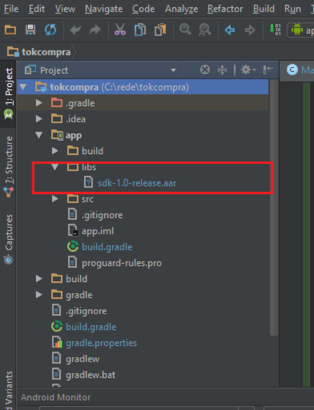

Neste codelab você irá integrar o pacote da rede para realizar um pagamento simples a partir de um aplicativo Android existente. Se você quiser aprender a fazer um novo aplicativo Android, acessa a home e veja como criar um novo projeto desde o início.
Você pode encontrar mais informações a partir do site da Poynt.
Faça a integração da biblioteca no seu projeto Android colocando ela em app/libs/

Assim que a biblioteca for colocada em seu projeto, re-sincronize o projeto em Build > Rebuild Project para que o Android Studio possa tomar ciência dos novos arquivos importados.
Defina as dependências do projeto para que na hora de compilar o código o Gradle possa capturar corretamente as informações de localização do pacote. O módulo de dependências fica na seção Gradle Scrips dentro do módulo build.gradle
Adicione a dependência do arquivo aar como descrito abaixo:
dependencies {
..
compile(name: 'sdk-1.0-release', ext: 'aar')
..
}Se você já usou o SDK da Poynt, o nome das classes e a forma como elas se comportam são os mesmos. Atente-se em utilizar os pacotes da Rede para este codelab e para seus projetos reais:
import rede.smartrede.sdk.FlexTipoPagamento;
import rede.smartrede.sdk.Intents;
import rede.smartrede.sdk.Payment;
import rede.smartrede.sdk.PaymentStatus;
private static final int AUTHORIZATION_CODE = 1993;
private static final int COLLECT_PAYMENT_REQUEST = 13132;Crie uma view do tipo Button para disparar a ação de cobrança. Vamos fazer com um valor aleatório e hard-coded. Não façam isso em casa crianças, estamos utilizando este exemplo apenas para você se acostumar com a plataforma e descomplicar o passo-a-passo de integração da plataforma :D
Para realizar o pagamento, os seguintes passos devem ser seguidos:
PaymentAo final, seu código para abertura de um Fragment de pagamento deve estar como o código abaixo:
public void abrirFragmentPagamento(){
Payment payment = new Payment();
String referenceId = UUID.randomUUID().toString();
payment.setReferenceId(referenceId);
long longAmount = ((Double) (10.0 * 100)).longValue();
payment.setAmount(longAmount);
payment.setCurrency("BRL");
payment.setPaymentType(FlexTipoPagamento.CREDITO_PARCELADO);
payment.setInstallments(3);
try{
Intent collectPaymentIntent = new Intent(Intents.ACTION_COLLECT_PAYMENT);
collectPaymentIntent.putExtra(Intents.INTENT_EXTRAS_PAYMENT, payment);
startActivityForResult(collectPaymentIntent, 1);
} catch (ActivityNotFoundException ex) {
Log.e("TokCompra", "Poynt Payment Activity not found - did you install PoyntServices?");
}
}No passo anterior, iniciamos uma activity com método startActivityForResult(). Toda vez que esse método é inicializado, a resposta é devolvida no método onActivityResult. Para receber a resposta, basta sobrescrever o método na activity.
@Override
public void onActivityResult(int requestCode, int resultCode, Intent data) {
super.onActivityResult(requestCode, resultCode, data);
// Check which request we're responding to
if (requestCode == COLLECT_PAYMENT_REQUEST) {
// Make sure the request was successful
if (resultCode == Activity.RESULT_OK) {
if (data != null) {
Payment payment = data.getParcelableExtra(Intents.INTENT_EXTRAS_PAYMENT);
Log.d(TAG, "Received onPaymentAction from PaymentFragment w/ Status(" + payment.getStatus() + ")");
if (payment.getStatus().equals(PaymentStatus.COMPLETED)) {
Toast.makeText(this, "Pagamento Concluído", Toast.LENGTH_LONG).show();
}
else if (payment.getStatus().equals(PaymentStatus.AUTHORIZED)) {
Toast.makeText(this, "Pagamento Autorizado", Toast.LENGTH_LONG).show();
}
else if (payment.getStatus().equals(PaymentStatus.CANCELED)) {
Toast.makeText(this, "Pagamento Cancelado", Toast.LENGTH_LONG).show();
}
else if (payment.getStatus().equals(PaymentStatus.FAILED)) {
Toast.makeText(this, "Pagamento Falhou", Toast.LENGTH_LONG).show();
}
else if (payment.getStatus().equals(PaymentStatus.REFUNDED)) {
Toast.makeText(this, "Pagamento Reembolsado", Toast.LENGTH_LONG).show();
}
else if (payment.getStatus().equals(PaymentStatus.VOIDED)) {
Toast.makeText(this, "Pagamento Anulado", Toast.LENGTH_LONG).show();
}
else {
Toast.makeText(this, "Pagamento Concluído", Toast.LENGTH_LONG).show();
}
}
}
else if (resultCode == Activity.RESULT_CANCELED) {
Toast.makeText(this, "Pagamento Cancelado", Toast.LENGTH_LONG).show();
}
}
}Uma vez que o pagamento foi processado, algumas vezes é necessário dar a opção para o lojista executar ações diferentes no pagamento processado. Ações como fazer nada, capturar, fazer estorno e ver detalhes. você pode fazer isso através da Intent DISPLAY_PAYMENT.
try {
Intent displayPaymentIntent = new Intent(Intents.ACTION_DISPLAY_PAYMENT);
displayPaymentIntent.putExtra(Intents.INTENT_EXTRAS_TRANSACTION_ID, transactionId);
startActivityForResult(displayPaymentIntent, DISPLAY_PAYMENT_REQUEST);
} catch (ActivityNotFoundException ex) {
Log.e(TAG, "Poynt Payment Activity not found - did you install PoyntServices?", ex);
}